Effect of Antenna Bearing Angles on PDSCH BER over CDL Channels
This notebook studies the impact of transmit and receive antenna bearing angles on the bit error rate (BER) of a 5G NR PDSCH link-level simulation.
For each CDL channel profile, the simulation sweeps either the TX or RX bearing angle while keeping the other side fixed. The BER results are compared across multiple random seeds to illustrate how antenna orientation and CDL channel conditions affect PDSCH performance.
[1]:
import numpy as np
import time
import matplotlib.pyplot as plt
from neoradium import CdlChannel, Carrier, PDSCH, AntennaPanel, AntennaElement, Grid, random
[2]:
# A multipurpose function for calculating BER with different configurations
def getBitrateInfo(numSlots, snrDbs, pdsc, cdlProfile, txAlphas, rxAlphas, seed, rxOmni=False, quiet=False):
results = {} # Dictionary for storing the results
for snrDb in snrDbs:
random.setSeed(seed) # Make the results reproducible
t0 = time.monotonic()
results[snrDb]={}
for txAlpha in txAlphas:
results[snrDb][txAlpha] = {}
for rxAlpha in rxAlphas:
# Create a CDL channel model
rxAntenna = AntennaElement(beamWidth=[60,360]) if rxOmni else AntennaPanel([1,2])
channel = CdlChannel(bwp, cdlProfile, delaySpread=300, carrierFreq=4e9, dopplerShift=5,
txAntenna = AntennaPanel([2,4]), # 8 TX antenna elements
txOrientation = [txAlpha,0,0],
rxAntenna = rxAntenna,
rxOrientation = [rxAlpha,0,0],
seed = seed)
bitErrors = 0
totalBits = 0
# Use the same channel for numSlots transmissions with different data bits
for slotNo in range(numSlots):
pdsch.initGrid() # Create and initialize the internal PDSCH grid
numBits = pdsch.getBitCapacity()[0] # Number of bits available in the PDSCH grid
txBits = random.bits(numBits) # Generate random binary data
pdsch.setPdschData(txBits) # Map the bitstream to the resource elements
channelMatrix = channel.getChannelMatrix() # Get the channel matrix
precoder = pdsch.getPrecodingMatrix(channelMatrix) # Get the precoding matrix
txGrid = bwp.createGrid(channel.nrNt[1]) # Create the transmit resource grid
pdsch.precodeTo(txGrid, precoder) # Precode the PDSCH into txGrid
rxGrid = txGrid.applyChannel(channelMatrix) # Apply the channel in the frequency domain
rxGrid = rxGrid.addNoise(snrDb=snrDb) # Add noise
effChanMat = channelMatrix @ precoder[None,...] # Effective channel matrix
eqGrid, llrScales = pdsch.equalize(rxGrid, effChanMat) # Equalization
rxBits = pdsch.getHardBits(eqGrid)[0] # Demodulation
bitErrors += np.abs(rxBits-txBits).sum() # Calculate the number of bit errors
totalBits += numBits
dt = time.monotonic()-t0 # Total runtime for this SNR
results[snrDb][txAlpha][rxAlpha] = {"totalBits":totalBits,
"bitErrors":bitErrors,
"BER": bitErrors*100/totalBits,
"Time": dt}
return results
Different TX Bearing Angles
[3]:
carrier = Carrier(numRbs=24, spacing=30) # Carrier with 24 resource blocks and 30 kHz subcarrier spacing
bwp = carrier.curBwp # The only bandwidth part in the carrier
pdsch = PDSCH(bwp, numLayers=2, modulation="16QAM") # Create a PDSCH object
pdsch.setDMRS(configType=2, additionalPos=2) # DMRS configuration
txAlphas=range(-180,181,10)
rxAlphas=[180]
snrDb=20
seeds = [12, 123, 1234, 12345]
allResults = {}
for cdl in ["A", "B", "C", "D", "E"]:
for seed in seeds:
print(f"Running with seed {seed} for CDL-{cdl} ...")
allResults[seed] = getBitrateInfo(numSlots=50, snrDbs=[snrDb], pdsc=pdsch, cdlProfile=cdl,
txAlphas=txAlphas, rxAlphas=rxAlphas, seed=seed, quiet=True)
if len(rxAlphas)==1: bers = [allResults[seed][snrDb][txAlpha][rxAlphas[0]]["BER"] for txAlpha in txAlphas]
else: bers = [allResults[seed][snrDb][txAlphas[0]][rxAlpha]["BER"] for rxAlpha in rxAlphas]
plt.plot(range(-180,181,10), bers, label=f"Seed={seed}")
plt.title(f"BER for Different {'TX' if len(rxAlphas) == 1 else 'RX'} Bearing Angles over CDL-{cdl} at SNR = {snrDb} dB")
plt.grid()
plt.legend()
plt.xlabel("Bearing Angle (degrees)")
plt.ylabel("BER (%)")
plt.show()
print()
Running with seed 12 for CDL-A ...
Running with seed 123 for CDL-A ...
Running with seed 1234 for CDL-A ...
Running with seed 12345 for CDL-A ...
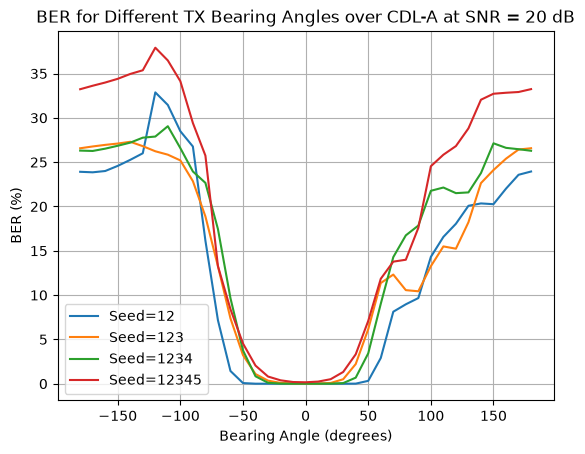
Running with seed 12 for CDL-B ...
Running with seed 123 for CDL-B ...
Running with seed 1234 for CDL-B ...
Running with seed 12345 for CDL-B ...
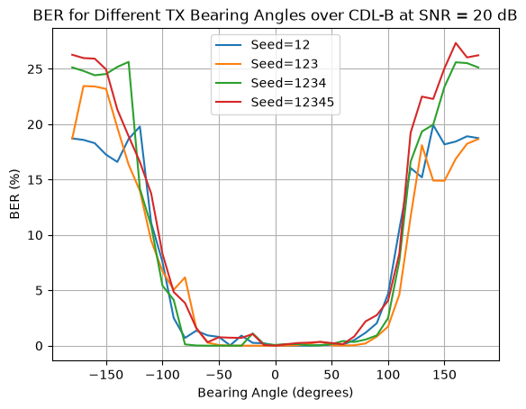
Running with seed 12 for CDL-C ...
Running with seed 123 for CDL-C ...
Running with seed 1234 for CDL-C ...
Running with seed 12345 for CDL-C ...
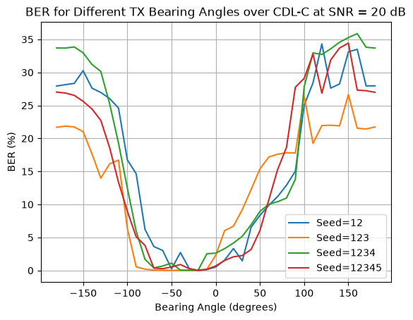
Running with seed 12 for CDL-D ...
Running with seed 123 for CDL-D ...
Running with seed 1234 for CDL-D ...
Running with seed 12345 for CDL-D ...
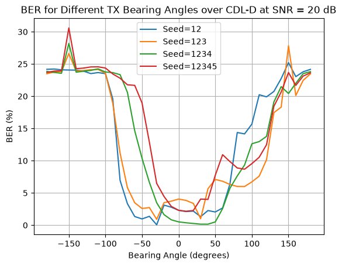
Running with seed 12 for CDL-E ...
Running with seed 123 for CDL-E ...
Running with seed 1234 for CDL-E ...
Running with seed 12345 for CDL-E ...
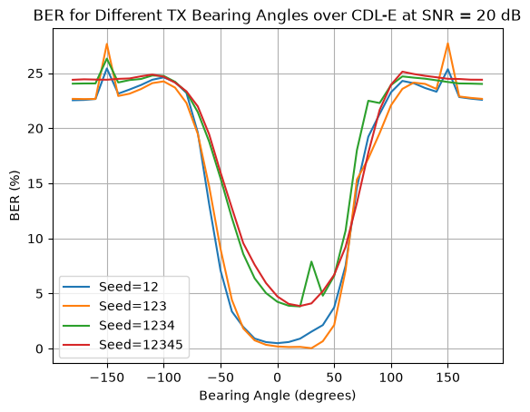
Different RX Bearing Angles
[4]:
txAlphas=[0]
rxAlphas=range(-180,181,10)
snrDb=20
seeds = [56, 567, 5678, 56789]
allResults = {}
for cdl in ["A", "B", "C", "D", "E"]:
for seed in seeds:
print(f"Running with seed {seed} for CDL-{cdl} ...")
allResults[seed] = getBitrateInfo(numSlots=50, snrDbs=[snrDb], pdsc=pdsch, cdlProfile=cdl,
txAlphas=txAlphas, rxAlphas=rxAlphas, seed=seed, quiet=True)
if len(rxAlphas)==1: bers = [allResults[seed][snrDb][txAlpha][rxAlphas[0]]["BER"] for txAlpha in txAlphas]
else: bers = [allResults[seed][snrDb][txAlphas[0]][rxAlpha]["BER"] for rxAlpha in rxAlphas]
plt.plot(range(-180,181,10), bers, label=f"Seed={seed}")
plt.title(f"BER for Different {'TX' if len(rxAlphas) == 1 else 'RX'} Bearing Angles over CDL-{cdl} at SNR = {snrDb} dB")
plt.grid()
plt.legend()
plt.xlabel("Bearing Angle (degrees)")
plt.ylabel("BER (%)")
plt.show()
Running with seed 56 for CDL-A ...
Running with seed 567 for CDL-A ...
Running with seed 5678 for CDL-A ...
Running with seed 56789 for CDL-A ...
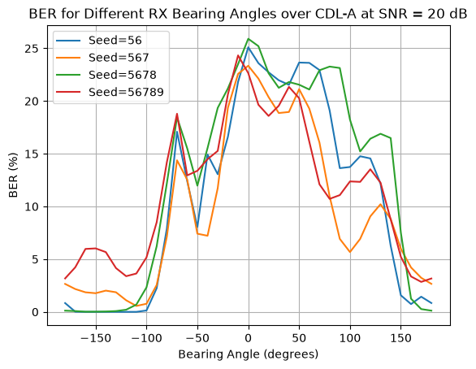
Running with seed 56 for CDL-B ...
Running with seed 567 for CDL-B ...
Running with seed 5678 for CDL-B ...
Running with seed 56789 for CDL-B ...
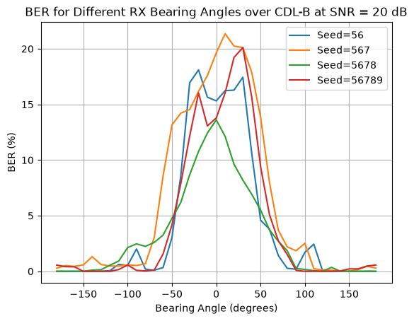
Running with seed 56 for CDL-C ...
Running with seed 567 for CDL-C ...
Running with seed 5678 for CDL-C ...
Running with seed 56789 for CDL-C ...
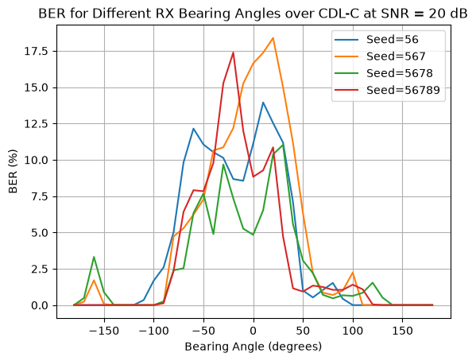
Running with seed 56 for CDL-D ...
Running with seed 567 for CDL-D ...
Running with seed 5678 for CDL-D ...
Running with seed 56789 for CDL-D ...
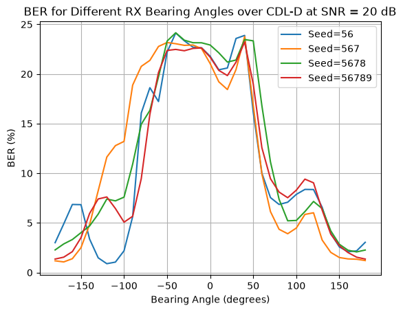
Running with seed 56 for CDL-E ...
Running with seed 567 for CDL-E ...
Running with seed 5678 for CDL-E ...
Running with seed 56789 for CDL-E ...
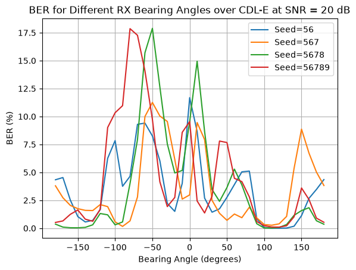
TX Bearing Angles in MISO with an Omnidirectional RX Antenna
[5]:
# Create the carrier:
carrier = Carrier(numRbs=24, spacing=30) # Carrier with 14 resource blocks and 30 kHz subcarrier spacing
bwp = carrier.curBwp # The only bandwidth part in the carrier
# Create a PDSCH object
pdsch = PDSCH(bwp, numLayers=2, modulation="16QAM")
pdsch.setDMRS(configType=2, additionalPos=2) # Specify the DMRS configuration
txAlphas=range(-180,181,10)
rxAlphas=[0]
snrDb=20
seeds = [12, 123, 1234, 12345]
allResults = {}
for cdl in ["A", "B", "C", "D", "E"]:
for seed in seeds:
print(f"Running with seed {seed} for CDL-{cdl} ...")
allResults[seed] = getBitrateInfo(numSlots=50, snrDbs=[snrDb], pdsc=pdsch, cdlProfile=cdl,
txAlphas=txAlphas, rxAlphas=rxAlphas,
seed=seed, rxOmni=True, quiet=True)
if len(rxAlphas)==1: bers = [allResults[seed][snrDb][txAlpha][rxAlphas[0]]["BER"] for txAlpha in txAlphas]
else: bers = [allResults[seed][snrDb][txAlphas[0]][rxAlpha]["BER"] for rxAlpha in rxAlphas]
plt.plot(range(-180,181,10), bers, label=f"Seed={seed}")
plt.title(f"BER vs. TX Bearing Angle with Omnidirectional RX, CDL-{cdl}, SNR = {snrDb} dB")
plt.grid()
plt.legend()
plt.xlabel("Bearing Angle (degrees)")
plt.ylabel("BER (%)")
plt.show()
Running with seed 12 for CDL-A ...
Running with seed 123 for CDL-A ...
Running with seed 1234 for CDL-A ...
Running with seed 12345 for CDL-A ...
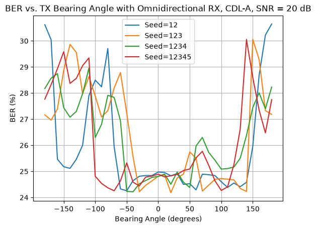
Running with seed 12 for CDL-B ...
Running with seed 123 for CDL-B ...
Running with seed 1234 for CDL-B ...
Running with seed 12345 for CDL-B ...
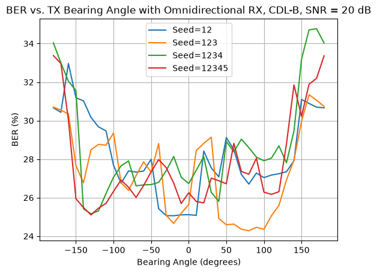
Running with seed 12 for CDL-C ...
Running with seed 123 for CDL-C ...
Running with seed 1234 for CDL-C ...
Running with seed 12345 for CDL-C ...
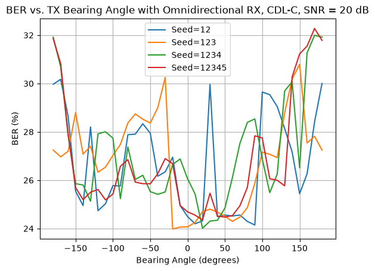
Running with seed 12 for CDL-D ...
Running with seed 123 for CDL-D ...
Running with seed 1234 for CDL-D ...
Running with seed 12345 for CDL-D ...
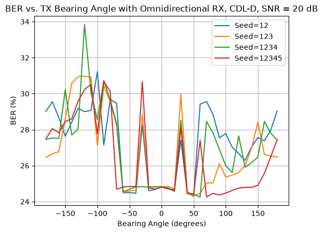
Running with seed 12 for CDL-E ...
Running with seed 123 for CDL-E ...
Running with seed 1234 for CDL-E ...
Running with seed 12345 for CDL-E ...
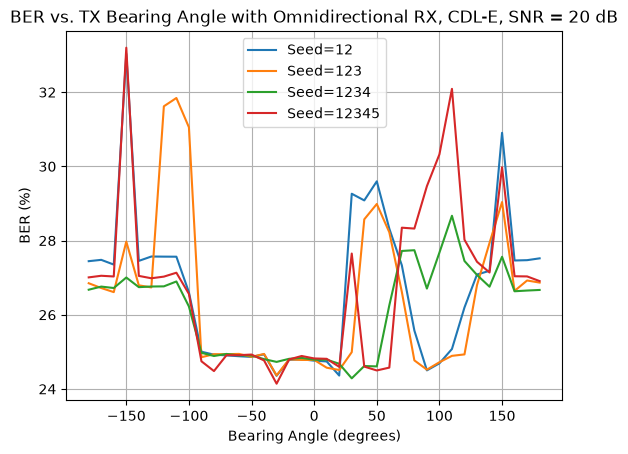
[ ]: